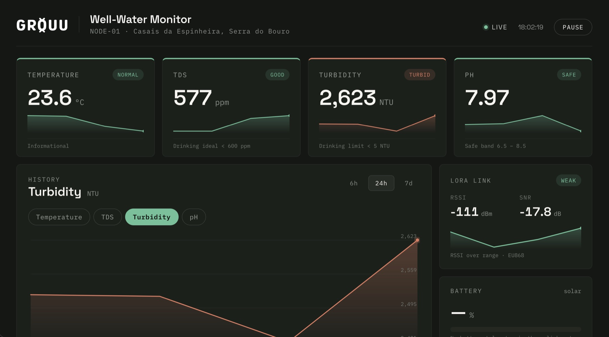

An open, containerised edge-server pipeline that any GROUU node can report into — messaging, flow logic, time-series storage and dashboards. Runs on any Linux host or Raspberry Pi from a single Docker Compose file.

The GROUU Stack is the completed, reusable backend every node reports into — a compose file plus the guidance to deploy and secure it. It runs live on the project's Raspberry Pi, ingesting the WellBouy node today; any TTN- or MQTT-connected node lands in the same pipeline.
Sources → ingest → store → visualise.
The stack is four cooperating services on one compose network, plus a management UI — each does one job, and any of them can be swapped.
MQTT broker — receives every sensor uplink. Per-client authentication (anonymous access disabled).
Flow-based processing — routes and parses messages (including TTN payloads) on the way to storage.
Time-series database — one bucket per source. All sensor history lives here.
Dashboards & visualisation, reading InfluxDB over the shared compose network.
Host-agnostic: any Linux machine or a Raspberry Pi. The project's instance runs on a Pi, exposed publicly through a Cloudflare tunnel.
Everything is declared: the four-service compose file, the Node-RED flows and TTN payload formatter, and the Grafana dashboard — all in the repo.
docker-compose.yml — the four-service stack (representative; full file in the repo)
services:
mosquitto:
image: eclipse-mosquitto:2
ports: ["1883:1883"]
restart: always
nodered:
image: nodered/node-red:latest
ports: ["1880:1880"]
volumes: ["nodered-data:/data"]
restart: always
influxdb:
image: influxdb:2
ports: ["8086:8086"]
volumes: ["influxdb-data:/var/lib/influxdb2"]
restart: always
grafana:
image: grafana/grafana:latest
ports: ["3000:3000"]
restart: always
The stack is a complete, reusable recipe running live on the project's Pi. To deploy your own: install Docker, run Portainer, paste the compose and deploy.
On any Linux host or Raspberry Pi.
Container-management UI on :9000.
Paste the compose → Deploy.
The public page the stack serves — real WellBouy data.